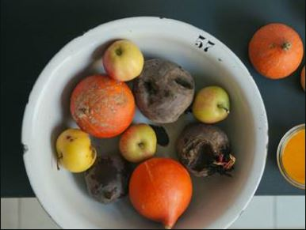

|  |
ANSWER YOUR BODY'S NEEDSThe way imgredients are sourced affects the way we nourish our bodies. Author Mark Schatzer believes our body naturally develops an appetite for the food and nutrients it needs to be heathly, but artificial flavoring are getting in the way. This can be reversed by focusing on high-quality ingredients and being mindful as your appetite guides you to consume according to your body's needs. BE MINDFULSourcing local or organic food is a good way to start being more mindful about what you're cooking and eating. |